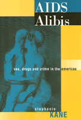

A fresh, astute means for debating the issues connecting the AIDS pandemic to government policy and crime in the Americas
A fresh, astute means for debating the issues connecting the AIDS pandemic to government policy and crime in the Americas


 A fresh, astute means for debating the issues connecting the AIDS pandemic to government policy and crime in the Americas
A fresh, astute means for debating the issues connecting the AIDS pandemic to government policy and crime in the Americas

|  |
AIDS AlibisSex, Drugs, and Crime in the AmericasStephanie Kanepaper EAN: 978-1-56639-628-8 (ISBN: 1-56639-628-X) |
"AIDS Alibis represents contemporary engaged anthropology at its best. Drawing upon intensive research in Belize and Chicago...each ethnographically focused chapter is powerful in its own right. Jointly they make for an innovative, deeply reasoned, and powerful critique of our own understandings—social, legal, medical, ethical—and help us move towards consequential reconsdierations."
—Don Brenneis, Anthropology, University of California, Santa Cruz
AIDS Alibis tackles the cultural landscape upon which AIDS, often accompanied by poverty, drug addiction, and crime, proliferates on a global scale. Stephanie Kane layers stories of individuals and events—from Chicago to Belize City, to cyberspace—to illustrate the paths of HIV infection and the effects of environment, government intervention, and social mores. Linking ordinary yet kindred lives in communities around the globe, Kane challenges the assumptions underlying the use of police and courts to solve health problems.
The stories reveal the dynamics that determine how the policy decisions of white-collar health-care professionals actually play out in real life. By focusing on life-changing social problems, the narratives highlight the contradictions between public health and criminal law. Look at how HIV has transformed our social consciousness, from intimate touch to institutional outreach. But, Kane argues, these changes are dwarfed by the United States' refusal to stop the war on drugs, in effect misdirecting resources and awareness.
AIDS Alibis combines empirical and interpretive methods in a path-breaking attempt to recognize the extent to which coercive institutional practices are implicated in HIV transmission patterns. Kane shows how the virus feeds on the politics of inequality and indifference, even as it exploits the human need for intimacy and release.
Excerpt available at www.temple.edu/tempress
"This wise and affecting work reveals the limitations of current public health and criminal justice approaches to the AIDS pandemic. It also teaches us how to do fieldwork. The passionate rendering of 'stories that fall between the prescribed categories of analysis' tells us more about AIDS than any work I have yet encountered."
—Shirley Lindenbaum, Anthropology, Graduate Center, City University of New York
"[This book] unveils the political unconscious of AIDS and reveals AIDS as a 'master signifier' circulating and mutating throughout different discursive formations. Kane juxtaposes media sources, conversations, dialogues, oral tales, statistics and official accounts. This innovative ethnography not only captures the elusive cultural meanings of AIDS, it is a first-rate example of how anthropologists can study 'fluid' phenomena that have no well-defined boundaries, phenomena that flow effortlessly across national, ethnic, and linguistic barriers, and in the process, transform themselves and their hosts."
—Stephen A. Tyler, Herb S. Autrey Professor of Anthropology and Linguistics, Rice University
"Stephanie Kane performs a timely and passionate ethnographic drama of misguided drug wars, risky bodily practices, panicky cultural logic, and the political unconscious of AIDS.... a subtle, poetic and activist account of the ritual intersection between dangerous institutional forces and the everyday enactment of sex, labor, pleasure, and crime."
—Stephen Pfohl, Sociology, Boston College
Acknowledgments
1. Introduction
Part I: Work
2. Prostitution North
3. Folk Surveillance
4. Prostitution South
Part II: Escape
5. Death Rite
6. Losing It
7. Illusion and Control
8. Easter in Livingston
Part III: Crime
9. Desperate
10. The Positively Arrogant Mishap
11. Outtakes
12. Everything I Have Is Yours
Notes
Bibliography
Index
 | Stephanie Kane is Professor in the Department of International Studies in the School of Global and International Studies at Indiana University. She is the author of The Phantom Gringo Boat: Shamanic Discourse and Development in Panama. |
Sociology
Health and Health Policy
© 2015 Temple University. All Rights Reserved. This page: http://www.temple.edu/tempress/titles/1419_reg.html.